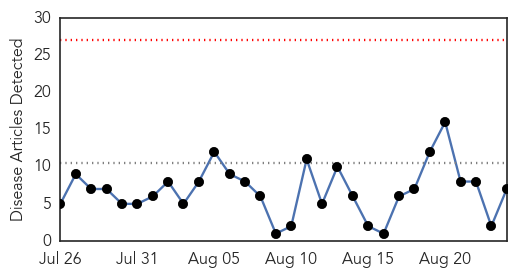
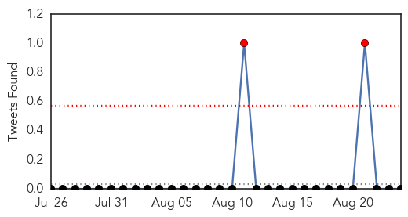
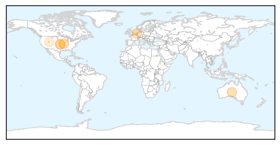
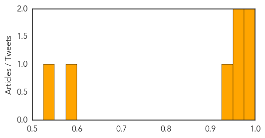

Mumps
30-Day Web Trend
6 alerts, 0 warnings
30-Day Twitter Trend
2 alerts, 0 warnings

Article Locations

Article Confidences

Top Articles:
-
No articles found for Aug 24, 2015
Top Tweets:
-
No tweets found for Aug 24, 2015
Influenza
30-Day Web Trend
0 alerts, 0 warnings

30-Day Twitter Trend
1 alerts, 0 warnings

Article Locations
Article Confidences
Top Articles:
- 0.996
- Breaking News, Sports, Troy, Elsberry, Winfield, Moscow Mills, Buchanan High, Winfield High, Elsberry High, Silex, Silex High, Old Monroe, Hawk Point, Foley, Classifieds Missouri, MO
- 0.994
- Why you might not be covered against worst flu in 5 years
- 0.972
- Study makes major advance toward more effective, long-lasting flu vaccine
- 0.967
- Flu season takes toll on schools
- 0.931
- New Study by TSRI and Janssen Makes Major Advance Toward More Effective, Long-Lasting Flu Vaccine
- 0.587
- 'Universal' Flu Vaccines Work in Animals
- 0.527
- Fewer deaths in nursing homes when flu shots work
Top Tweets:
-
No tweets found for Aug 24, 2015